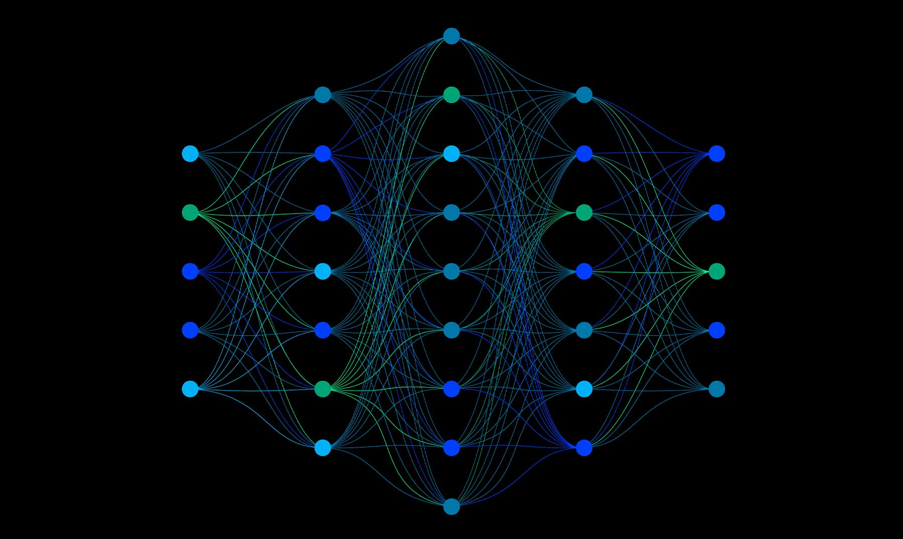
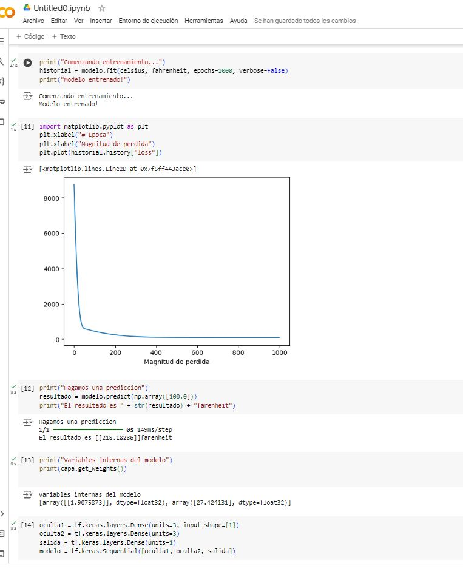

Aprendimos a subir archivos a Github...

Vimos que datos se repetían y buscamos graficar de cierto que nos brindara dicha información en una gráfica de pastel.

Se agruparon las actividades que eran similares y se contaron manualmente.

Elegimos la columna número 5 y sacamos las palabras repetidas con la ayuda de ChatGPT, las rectificamos manualmente e hicimos lo mismo con las palabras únicas (que no se repetían). Luego, hicimos la suma de las palabras repetidas y también sacamos el número de palabras únicas, y por último hicimos un gráfico circular 3D con los números de las palabras repetidas.

De manera manual tomé los nombres de las distintas IAs y luego conté cuántas veces se repetía cada una. Finalmente, junté los valores y generé un anillo con Excel donde podemos ver que lo que más se repite es ChatGPT.

Yo utilicé Excel con fórmulas para sacar las palabras que estaban repetidas, separando el texto y luego contando las palabras más importantes de las inteligencias artificiales utilizando esta fórmula para contar las palabras que se repiten:
SUMA(SI(NO(ESERROR(BUSCAR("chat"; A25:AY41)));1;0))+SUMA(SI(NO(ESERROR(BUSCAR("chat gpt"; A25:AY41)));1;0))

Se realizó utilizando fórmula de Excel y tablas dinámicas.

David Sarria - Valentina Montealegre: Nos dimos cuenta que hay varias coincidencias y todas apuntan hacia el hecho de que todos contamos con habilidades blandas suficientes y exactas para llevar a cabo un excelente trabajo en equipo.
Básicamente lo que hicimos fue identificar, contar las palabras y finalmente estructuramos los resultados en una tabla de conteo que permite ver rápidamente la frecuencia de cada palabra y proporciona una visión general de los temas más mencionados, los cuales son la inseguridad, contaminación y transporte.
Toda red neuronal consta de capas de nodos o neuronas artificiales: una capa de entrada, una o varias capas ocultas y una capa de salida. Cada nodo se conecta a los demás y tiene su propia ponderación y umbral asociados. Las redes neuronales se basan en datos de entrenamiento para aprender y mejorar su precisión con el tiempo. 
Aprendimos para que se usa tensorflow en google colab y 